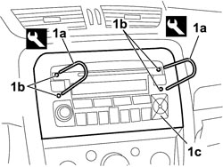
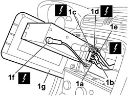

5570T80 CAR RADIO EQUIPMENT - R+R
- Path
- Procedures > 55 ELECTRICAL EQUIPMENT > 5570 ACCESSORIES > 5570T CAR RADIO AND CAR TELEPHONE > 5570T80 CAR RADIO EQUIPMENT - R+R
- Kind
- repair procedure (removal / refitting; the operation number is the code)
- Applies to
- all engines; all production periods
- Interactive page
- https://sloeber94.github.io/elrnDB-fCrm/en/#/194000784
Applies to: all engines; all production periods
 Removing
Removing
 Refitting
Refitting- Turn the ignition key to the OFF position.
- Disconnect the negative battery terminal.
Description | Connector | |
|---|---|---|
BATTERY |
1. Engage extractors (1a) in holes (1b) and remove radio (1c).

Applies to: all engines; all production periods
1. Disconnect the electrical connections (1a), (1b), (1c), (1d), (1e), aerial connection (1f) and remove radio (1g).
Description | Connector | |
|---|---|---|
1a | RADIO |
Description | Connector | |
|---|---|---|
1b | RADIO |
Description | Connector | |
|---|---|---|
1c | RADIO |
Description | Connector | |
|---|---|---|
1d | RADIO |
Description | Connector | |
|---|---|---|
1e | RADIO |
Description | Connector | |
|---|---|---|
1f | RADIO |

Applies to: all engines; all production periods
Refitting
Removing- Check the condition of the radio.
Connect the electrical connections and the connections for the aerials.
Description | Connector | |
|---|---|---|
RADIO |
- Fit the radio in its housing.
- Connect the battery terminal.
Description | Connector | |
|---|---|---|
BATTERY |